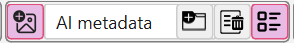
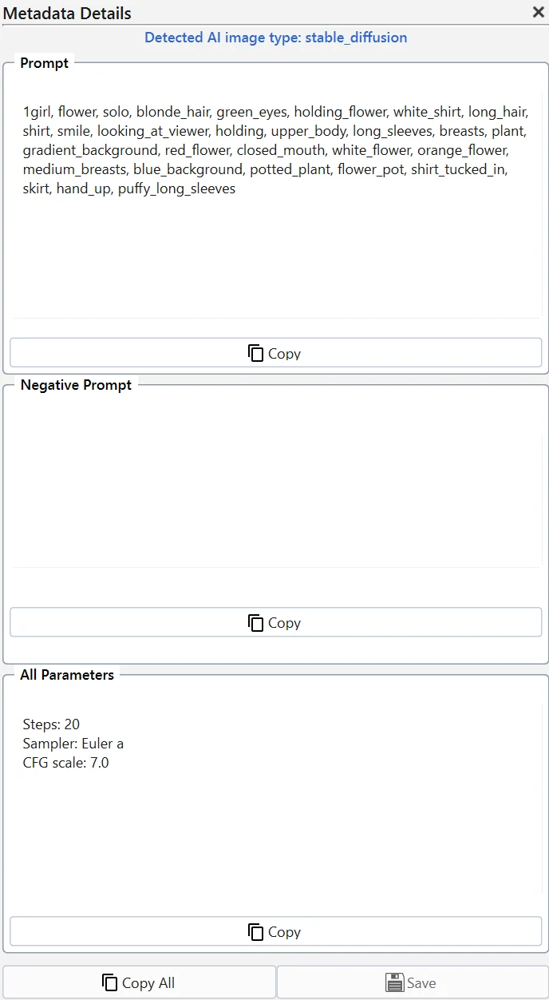

Metadata
View and edit the prompts and parameters embedded in images from Stable Diffusion, ComfyUI, NovelAI and others, and remove them in bulk before publishing.
Toolbar

12345
| 1Also remove embedded data | When on, embedded data inside the image (such as NovelAI stealth info) is removed too. |
| 2Status | Shows no metadata / metadata / AI metadata. |
| 3Folder | When on, running processes every image in the same folder (you choose to overwrite or save separate files first). |
| 4Remove | Removes the metadata. |
| 5Details | Opens / closes the Metadata Details sidebar. |
Metadata Details

1234567| 1Detected AI image type | Automatically detects SD (A1111 etc.) / ComfyUI / NovelAI, including stealth embedded info. |
| 2Prompt | The prompt used for generation. |
| 3Negative Prompt | |
| 4All Parameters | Steps, sampler, CFG and more. |
| 5Copy | Copies that field. |
| 6Copy All | Copies prompt, negative prompt and parameters together. |
| 7Save | Saves your edits to the image. |
- Turn on "Auto-show metadata details at startup" in Settings to open the sidebar at startup.
- Turn on "Import image generation info into inpaint prompts" in Settings to use the prompt as the starting value for Advanced, Reference and NovelAI Inpaint.